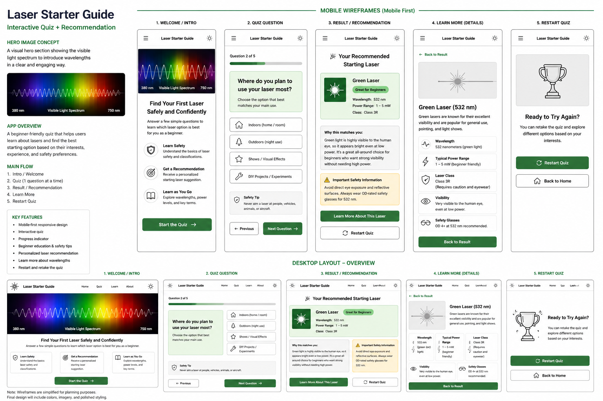

Site Name
Laser Starter Guide
This application helps beginners understand laser technology, safety, and wavelength selection through an interactive quiz.
Purpose
The mission of Laser Starter Guide is to educate new laser hobbyists through an interactive, beginner-friendly experience that makes laser wavelengths, power levels, beam characteristics, and laser safety easy to understand.
Instead of overwhelming users with technical terminology, the application will guide them through a short interactive quiz and recommend an appropriate beginner-friendly laser based on their interests, intended use, and experience level. Throughout the experience, users will also learn important laser safety practices and why choosing the correct laser matters.
Audience
Laser Starter Guide is designed primarily for beginners who are interested in learning about visible lasers but have little or no previous experience. Whether someone is curious about laser pointers, handheld lasers, or simply wants to understand how different wavelengths and power levels work, this application provides an easy-to-follow starting point.
The content is written in clear, beginner-friendly language so users can confidently learn about laser classes, beam characteristics, wavelengths, and safe operating practices without feeling overwhelmed by technical terminology. More experienced hobbyists may also use the application as a quick reference, but the primary focus is helping new users build a strong foundation in laser safety and technology.
Dynamic Elements
JavaScript will be used to create an interactive quiz that guides users through a series of beginner-friendly questions. Each question will be displayed one at a time, and the user will select an answer by clicking a button. The application will save the user's choices, update a progress indicator, and display the next question without reloading the page.
The quiz questions and laser recommendations will be stored in arrays of objects. JavaScript array methods such as forEach(), filter(), and map() will be used to display answer choices, compare the user's responses with available laser options, and generate the final recommendation.
Conditional branching will determine which laser option is most appropriate based on the user's experience level, intended use, preferred wavelength, and safety preferences. The application will use DOM manipulation to update the quiz card, progress bar, recommendation details, and safety warnings. Event listeners will respond to answer selections, navigation buttons, the learn-more button, and the restart-quiz button.
Pseudocode
START APPLICATION
Create an array of quiz question objects
Create an array of laser option objects
Create an empty object to store the user's answers
Set the current question number to 0
Select the quiz container, progress bar, result container,
and navigation buttons from the HTML
CALL displayQuestion function
FUNCTION displayQuestion
Get the current question from the questions array
Display the question text
Create a button for each answer choice
Add a click event listener to each answer button
Update the progress bar
END FUNCTION
WHEN the user selects an answer
Save the selected answer in the user answers object
Increase the current question number by 1
IF more questions remain
CALL displayQuestion function
ELSE
CALL calculateRecommendation function
END IF
END EVENT
FUNCTION calculateRecommendation
Filter the laser options based on:
User experience
Preferred wavelength or color
Intended use
Safety preferences
IF the user has no laser experience
Limit the result to a beginner-friendly,
low-powered laser option
END IF
IF multiple laser options match
Calculate a score for each option
Select the option with the highest score
END IF
CALL displayRecommendation function
END FUNCTION
FUNCTION displayRecommendation
Hide the quiz section
Show the result section
Display the recommended wavelength
Display the suggested power range
Display the laser class
Display an explanation of why it matches
Display the appropriate safety information
IF the result requires additional eye protection
Display a wavelength-specific safety warning
END IF
END FUNCTION
WHEN the user clicks the Learn More button
Display additional information about the recommended wavelength
END EVENT
WHEN the user clicks the Restart Quiz button
Clear the saved answers
Set the current question number back to 0
Hide the result section
Show the quiz section
CALL displayQuestion function
END EVENT
END APPLICATION
Wireframe
The following wireframe illustrates the planned layout of the Laser Starter Guide web application for both desktop and mobile devices.
